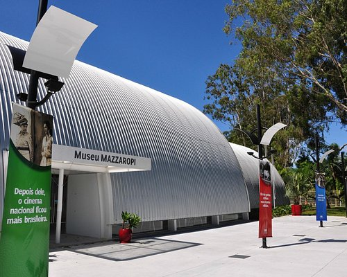
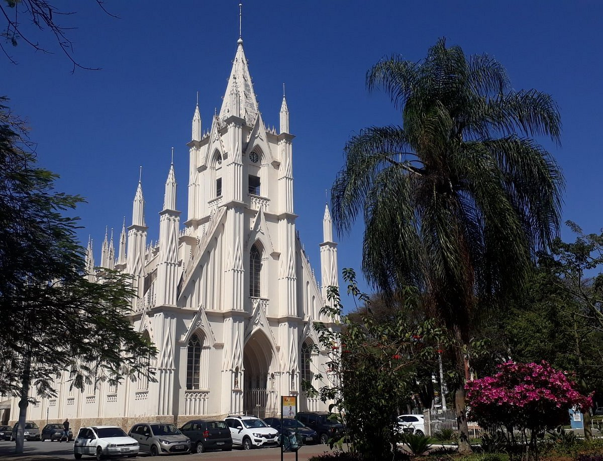

O Museu Mazzaropi é uma homenagem ao artista e cineasta Amácio Mazzaropi. O Museu Mazzaropi foi criado em 1992 por João Roman Júnior como uma forma de homenagear o velho amigo e cineasta brasileiro. A amizade de longa data, tinha como ponto de encontro as serestas noite adentro de São Luiz do Paraitinga, às quais não faltavam o compositor Elpídio dos Santos, criador das músicas para os filmes de Mazzaropi, e o maestro Fêgo Camargo (pai da apresentadora de TV Hebe Camargo). Nessa época saudosa, ninguém imaginaria que anos depois da morte de Mazzaropi o local dos estúdios da PAM Filmes seria comprado por João Roman Júnior onde hoje existe o Hotel Mazzaropi ®.
O Museu de História Natural de Taubaté Dr. Herculano Alvarenga é uma das atrações mais queridas da região do
Vale do Paraíba, oferecendo um passeio recheado de curiosidades e conhecimento.
O legal de visitar um lugar assim é que você não está fazendo só um passeio turístico, mas também
conhecendo
um pouco mais da nossa história.
Famoso pela beleza, o Santuário é o primeiro erguido no mundo em homenagem à Santa Terezinha.
bispo de
Taubaté Nunes de Ávila e Silva divulgou em Taubaté e região a vida e doutrina de Irmã Teresa do menino
Jesus, iniciando junto a população um movimento para erguer uma capela em honra a Santa Terezinha, no asilo
Largo da Cadeia.
Após um grande arremate nas doações, a ideia de construir uma simples capela se
transformou na construção de um majestoso santuário.
As obras começaram em 7 de junho de 1923, sendo
projetada e inspirada na igreja de Saint Pierre de Lisieux.
A inauguração oficial ocorreu em 24 de
setembro de 1929, embora desde 1924 cerimônias fossem realizadas.
O belo templo apresenta a imponência
das linhas arquitetônicas de estilo neogótico, localizado numa área
verde urbanizada e tranquila.
Na praça, que recebeu o nome de Santa Teresinha, os habitantes do município
podem fazer caminhadas em
uma pista de 680 metros.
O playground existente anima as crianças e a academia ao ar livre incentiva a
prática de exercícios. A
praça também conta com a Feira de Artesanato aos domingos.
